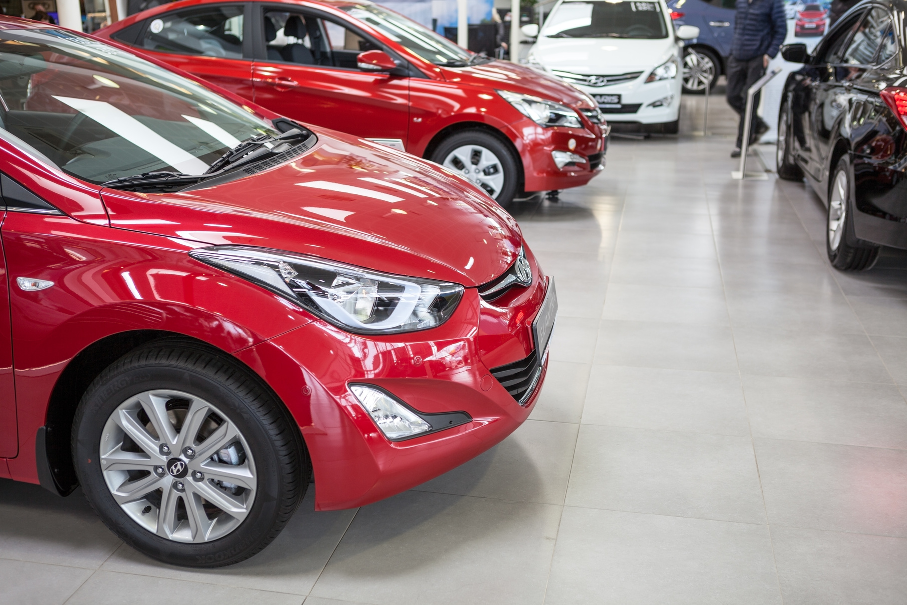

Покупка автомобиля — дело серьезное и затратное. Чтобы не попасть впросак, столкнувшись с мошенничеством или из-за незнания юридических тонкостей, достаточно следовать лишь нескольким несложным правилам, которыми, как ни удивительно, многие пренебрегают. Давайте рассмотрим стандартную ситуацию: вы наконец-то решились на покупку машины своей мечты. Но денег на новое авто не хватает, или вы считаете, что это нерентабельно. Так или иначе, вы решаете приобрести автомобиль с рук. Вы находите объявление о продаже желаемого автомобиля, встречаетесь с владельцем, и состояние машины вас полностью устраивает. Но авто находится в залоге у банка. Можно ли купить такую машину? Чем грозит такое приобретение? И как защитить себя от непредвиденных неприятностей?
Если машина находится в залоге у банка, это вовсе не значит, что ее нельзя купить или продать.
Схемы сделок с залоговыми автомобилями существуют довольно длительный срок, и граждане ими успешно пользуются. Главное, что нужно понимать, соглашаясь на сделку с заложенным авто, что оно находится на банковском кредитном балансе. То есть продавец машины, если он полностью не погашает кредит при сделке, посредством этой же сделки передает свои обязательства перед банком покупателю, если банк дает свое согласие на такую операцию.
Если вы согласны на сделку, то лучше провести ее в отделении банка, в залоге у которого находится машина.
В первом варианте продавец должен поставить банк в известность о том, что он собирается досрочно погасить свой кредит на автомобиль. Чтобы выкуп автомобиля был оформлен по всем правилам, желательно пригласить на сделку нотариуса. Владелец залогового авто согласует с кредитной организацией (банком) и нотариусом все вопросы, касающиеся документального оформления сделки.
Процедура выкупа залогового автомобиля в банке проходит следующим образом: стороны подписывают договор купли-продажи, удостоверяемый нотариусом, затем покупатель оплачивает покупку, после чего продавец полностью погашает кредит, внеся в кассу банка необходимую для этого сумму. Банк должен снять все залоговые обязательства по машине, подав уведомление в реестр уведомлений о залогах движимого имущества.
Во втором варианте сперва происходит одобрение банком переуступки прав требования в размере оставшейся суммы задолженности продавца перед банком по данному автомобилю. Затем покупатель и продавец подписывают договор купли-продажи, удостоверяемый нотариусом. Если стоимость автомобиля превышает размер задолженности перед банком, покупатель выплачивает эту разницу продавцу. После оформления всех документов банк подает уведомление в реестр уведомлений о залоге движимого имущества о снятии залога с продавца и о возникновении нового залога на этот же автомобиль, но уже на покупателя.
Однако может оказаться, что вы купите автомобиль, находящийся в залоге, даже не подозревая об этом, а через некоторое время обнаружится, что вы должны либо найти предыдущего владельца, либо гасить чужой кредит. Если владелец при сделке умолчал о том, что авто в залоге, найти его чаще всего не удается. И вы, потратив деньги на покупку, либо потеряете машину, либо будете выплачивать банку деньги, по сути, второй раз покупая одну и ту же машину. Избежать такой неприятной ситуации также может помочь нотариус. Достаточно прийти к нему, имея VIN автомобиля, который вы хотите купить, и нотариус проверит в реестре уведомления о залогах движимого имущества, находится ли машина в залоге или нет, и выдаст вам документ, в котором будет значиться, что на определенную дату и время автомобиль не значился в залоговом реестре. Это гарантирует вам, что впоследствии оспорить ваше право владеть этим автомобилем банк уже не сможет, даже если автомобиль был в залоге, просто банк по каким-то причинам не внес сведения об этом в реестр. Проверить данные реестра можно и самостоятельно, на сайте Федеральной нотариальной палаты, но только благодаря документу от нотариуса, даже если машина все-таки находится в залоге, но информация не была внесена в реестр, банк не сможет заставить вас выплачивать чужой долг или забрать машину.